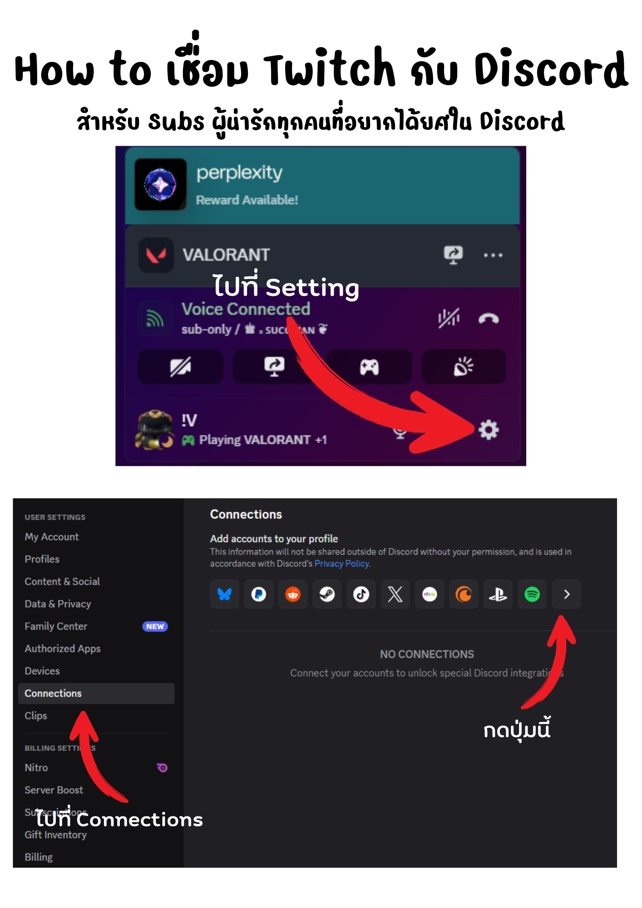
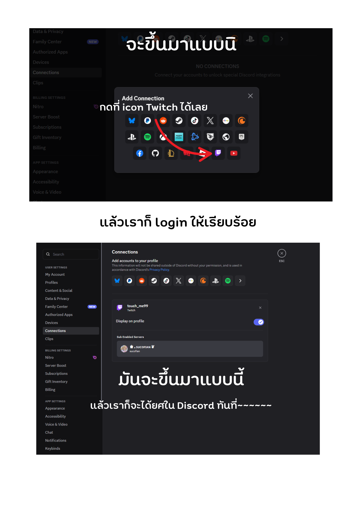

วิธีเชื่อม Twitch เข้ากับ Discord สำหรับผู้ที่กด Subscribe ช่องของเรา เพื่อรับ “ยศพิเศษใน Discord” อัตโนมัติ พร้อมภาพตัวอย่างและขั้นตอนทีละสเต็ป


กดปุ่มด้านบนหรือคลิกที่นี่ 👉 https://discord.gg/BuDZUR89yR
เข้ามาแล้วระบบจะซิงก์ยศจาก Twitch อัตโนมัติ